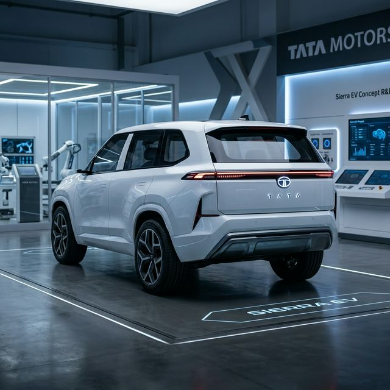
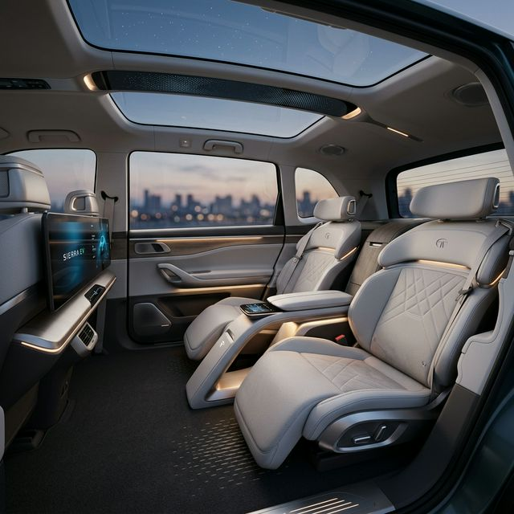

A Legend Reborn in Electric
The Sierra EV is a bold reimagining of India's first home-grown luxury SUV. It retains the signature rear curved windows while shifting to an ultra-modern, fully electric drivetrain built on Tata's advanced 'acti.ev' platform.


Anticipated Specifications
| Paramater | Details |
|---|---|
| Charging Time | 0-80% in 55 mins (DC Fast) |
| Estimated Range | 500 km per charge |
| Top Speed | 160 km/h (Electronically limited) |
| Drive Layout | AWD (Optional) |
| Infotainment | 10.25-inch Digital Cockpit |
| Battery Pack | Approx 60-70 kWh |
Frequently Asked Questions
The production version of the Tata Sierra EV is expected to debut globally by mid-2025 with an India launch shortly after.
While not a traditional 4x4, the acti.ev platform supports a Dual-Motor AWD (All-Wheel Drive) configuration for better off-road traction.
The "Lounge Seating" in the rear and the iconic curved rear Alpine glass windows are the most talked-about design elements.
The Sierra is expected to come in both a standard 4-seater luxury 'Lounge' version and a traditional 5-seater version.
Yes, it will support the CCS2 charging standard, allowing it to add over 100 km of range in just 10-15 minutes of fast charging.
Yes, the Sierra EV is a full-sized mid-SUV and will sit significantly above the Nexon.ev in Tata's electric portfolio.
Final Verdict
The Tata Sierra EV is the ultimate symbol of Indian automotive pride. It is meant for the collector who wants a piece of history with the technology of tomorrow.